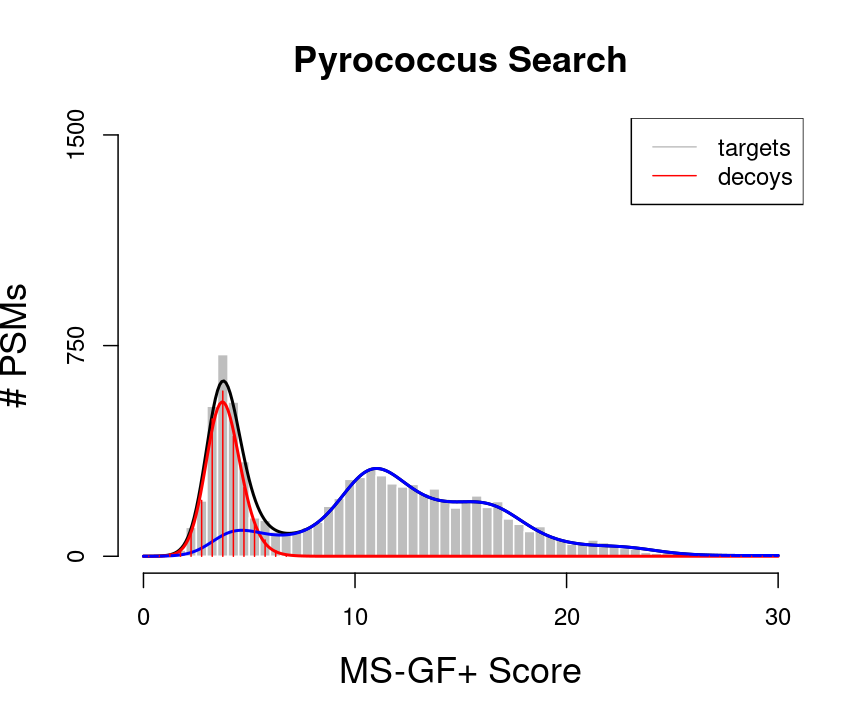
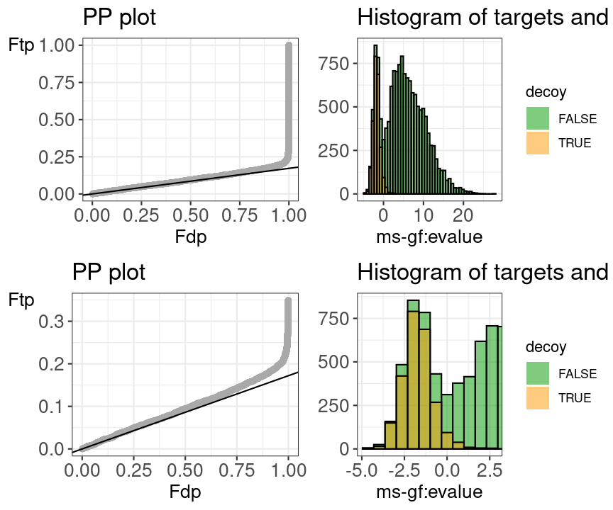

library(TargetDecoy)
library(ggplot2)
library(tidyverse)
data("ModSwissXT")
hlp <- TargetDecoy:::.getDF(ModSwissXT)
names(hlp) <- names(hlp) %>%
str_replace(pattern=":",replacement="_")
hlp <- hlp %>%
mutate(omssa_evalue=as.double(omssa_evalue))
names(hlp) <- names(hlp) %>% str_replace(pattern="-",replacement = "_")
hlp <- hlp %>% mutate(ms_gf_specevalue=as.double(ms_gf_specevalue))Shotgun proteomics relies on the assignment of a large number of spectra to theoretical peptides derived from a sequence database. Multiple search engines have been developed for this task, each with its own advantages and drawbacks. Most proteomics database searches are performed as so-called target/decoy searches. A crucial assumption of the target/decoy approach is that the decoy peptide-spectral match (PSM) hits have similar properties as bad target hits so that the decoys can be used to characterize the distribution of bad hits. In this tutorial we will introduce diagnostic plots that can be used to evaluate these assumptions.
We first introduce some notation. With x we denote the PSM score and we assume that larger score values indicate a better match to the theoretical spectrum. Then the scores will follow a mixture distribution:
\[ f(x)=\pi_b f_b (x)+(1-\pi_b ) f_g(x), \]
with \(f(x)\) the target PSM score distribution, \(f_b(x)\) the mixture component corresponding to incorrect PSMs, \(f_g(x)\) the mixture component corresponding to the correct PSMs and \(\pi_b\) the fraction of incorrect PSMs. Based on the mixture distribution we can calculate the posterior probability that a PSM with score x is a bad match:
\[ P[\text{Bad hit} \vert \text{score }x]=\frac{\pi_b f_b (x)}{f(x)}, \]
which is also referred to as the posterior error probability (PEP) in mass spectrometry based proteomics. Based on the mixture model, we can also calculate the posterior probability that a random PSM in the set of all PSMs with scores above a score threshold t is a bad hit (see e.g. Figure 1):
\[ P[\text{Bad hit} \vert \text{score }x>t]=\pi_b \frac{1-f_b (t)}{1-F(t)}, \]
With \(F(t)\) and \(F_b(t)\) the cumulative distribution functions of all target PSMs and of the bad PSMs, respectively. Hence, \(1-F_b(t)\) is the probability to observe a bad PSM hit above the threshold and, \(1-F(t)\) the probability to observe a target PSM hit above the threshold. The probability \(P[\text{Bad hit} \vert \text{score }x>t]\) is also referred to as the false discovery rate (FDR) of the set of PSMs with scores above the threshold t. Hence, the FDR has the interpretation of the probability on a bad hit in the set of all target hits that are returned in the final PSM list.
library(mgcv)
#> Loading required package: nlme
#>
#> Attaching package: 'nlme'
#> The following object is masked from 'package:dplyr':
#>
#> collapse
#> This is mgcv 1.8-40. For overview type 'help("mgcv-package")'.
dec <- -log10(hlp$ms_gf_specevalue[hlp$isdecoy]) %>% na.exclude()
tar <- -log10(hlp$ms_gf_specevalue[!hlp$isdecoy]) %>% na.exclude()
breaks <- seq(0,30,.5)
#binWidth <-2
#breaks <- seq(floor(min(c(dec,tar))/binWidth)*binWidth,ceiling(max(c(dec,tar))/binWidth)*binWidth,binWidth)
#code if we register the modes by substracting the mode from the target scores and the decoy scores.
#breaks=seq(-(ceiling(abs(min(c(dec,tar))/binWidth))+.5)*binWidth,(ceiling(max(c(dec,tar))/binWidth)+.5)*binWidth,binWidth)
histDec <- hist(dec,breaks=breaks,plot = FALSE)
histTar <- hist(tar,breaks=breaks,plot=FALSE)
histSam <- hist(c(dec,tar),breaks=breaks, plot = FALSE)
grid<-seq(0,30,.1)
countsTarG<-data.frame(y=histTar$counts-histDec$counts,x=histTar$mids)
countsTarG$y[countsTarG$y<0]<-0
fitTarG<-gam(y~s(x),data=countsTarG,family=poisson)
fitTarGrid<-exp(predict(fitTarG,newdata=data.frame(x=grid)))
countsDec<-data.frame(y=histDec$counts,x=histDec$mids)
fitDec<-gam(y~s(x),data=countsDec,family=poisson)
fitBad<-exp(predict(fitDec,newdata=data.frame(x=grid)))
plot(histTar,xlab="MS-GF+ Score",ylab="# PSMs",main="Pyrococcus Search",border="white",col="grey",cex.axis=1.5,cex.main=1.5,cex.lab=1.5,ylim=c(0,1500), axes =FALSE)
axis(side=2,at=c(0,750,1500))
axis(side=1,at=c(0,10,20,30))
lines(grid,fitBad+fitTarGrid,col="black",lwd=2)
lines(grid,fitBad,col="red",lwd=2)
lines(grid,fitTarGrid,col="blue",lwd=2)
lines(histDec$mids,histDec$counts,col="red",type="h")
legend("topright",legend=c("targets","decoys"),col=c("grey","red"), lty =rep(1,2))
We would like to calculate the FDR corresponding to the set op PSMs with a target score above the threshold t. In order to calculate the FDR, we thus have to characterize the distribution of the bad hits and of all PSMs. In proteomics this is done by the use of the target/decoy approach.
When using a competitive target decoy search, the FDR of the set of returned PSMs is estimated by dividing the number of accepted decoys PSMs by the number of accepted target PSMs above a certain score cutoff [1].
\[ \widehat{\text{FDR}}(t)=\frac{\# decoys | x>t}{\#targets |x>t} \]
This can be rewritten as:
\[ \widehat{\text{FDR}}(t)=\frac{\#decoys}{\#targets}\frac{\frac{\# decoys | x>t}{\#decoys}}{\frac{\#targets |x>t}{\#targets}} \]
\[ \widehat{\text{FDR}}(t)=\hat\pi_b\frac{1-\bar{F}_0(t)}{1-\bar{F}(t)} \]
Hence, the proportion of bad hits \( _b \) is estimated as the number of decoys divided by the number of targets, and the competitive TDA assumes that it is equally likely that a bad hit matches to a bad target or to a decoy; the probability of a (bad) target PSM hit above the threshold is estimated based on the empirical cumulative distribution in the sample, i.e. as the fraction of targets (decoys) that are above the threshold. Hence, a second assumption is that the decoy matches provide a good simulation of the target matches. See e.g. [2]. These assumptions can be evaluated with our TargetDecoy R/Bioconductor package.
The Pyrococcus furiosus (strain ATCC 43587 / DSM 3638 / JCM 8422 / Vc1) reference proteome. The resulting database has 2,051 proteins in total (https://www.uniprot.org/uniprot/?query=taxonomy:186497, taxonomy:“Pyrococcus furiosus (strain ATCC 43587 / DSM 3638 / JCM 8422 / Vc1) [186497]”).
The data can be found on https://github.com/statOmics/PDA22GTPB/tree/data.
We will use the mzid file for the pyrococcus example, which can be found at data/identification/pyrococcusMSGF+.mzid.
Download the code of this vignette by clicking the code button in the top of this page and downloading.
Open the downloaded file in Rstudio
Load libraries
library(TargetDecoy)
library(RCurl)
#>
#> Attaching package: 'RCurl'
#> The following object is masked from 'package:tidyr':
#>
#> complete
library(mzID)
#>
#> Attaching package: 'mzID'
#> The following object is masked from 'package:dplyr':
#>
#> id
#> The following object is masked from 'package:purrr':
#>
#> flattendownload.file("https://raw.githubusercontent.com/statOmics/PDA22GTPB/data/identification/pyrococcusMSGF%2B.mzid","pyrococcusMSGF+.mzid")path2File <- "pyrococcusMSGF+.mzid"
msgf <- mzID(path2File)
#> reading pyrococcusMSGF+.mzid...
#> Warning in type.convert.default(...): 'as.is' should be specified by the caller;
#> using TRUE
#> Warning in type.convert.default(...): 'as.is' should be specified by the caller;
#> using TRUE
#> Warning in type.convert.default(...): 'as.is' should be specified by the caller;
#> using TRUE
#> Warning in type.convert.default(...): 'as.is' should be specified by the caller;
#> using TRUE
#> Warning in type.convert.default(...): 'as.is' should be specified by the caller;
#> using TRUE
#> Warning in type.convert.default(...): 'as.is' should be specified by the caller;
#> using TRUE
#> Warning in type.convert.default(...): 'as.is' should be specified by the caller;
#> using TRUE
#> Warning in type.convert.default(...): 'as.is' should be specified by the caller;
#> using TRUE
#> Warning in type.convert.default(...): 'as.is' should be specified by the caller;
#> using TRUE
#> Warning in type.convert.default(...): 'as.is' should be specified by the caller;
#> using TRUE
#> Warning in type.convert.default(...): 'as.is' should be specified by the caller;
#> using TRUE
#> Warning in type.convert.default(...): 'as.is' should be specified by the caller;
#> using TRUE
#> Warning in type.convert.default(...): 'as.is' should be specified by the caller;
#> using TRUE
#> Warning in type.convert.default(...): 'as.is' should be specified by the caller;
#> using TRUE
#> DONE!
Two diagnostic plots are generated. A histogram of target and decoy scores (top panels) and Probability-Probability plots (PP-plots). In the histogram the shape of the decoys (red) should be equal to that of bad target hits (first mode in the target distribution indicated in green). The height of the decoys can be slightly lower than the first mode in the target distribution because some good target hits also have a low score. Here, the histogram does not indicate problems with the TDA.
Deviations from the assumptions of TDA can be better evaluated in the PP-plot (lower panel). The PP-plot displays the empirical cumulative distribution (ECDF) from the target distribution in function that of the decoy distribution. PP-plots have the property that they show a straight 45 degree line through the origin if and only if both distributions are equivalent. Any deviation from this straight line indicates that the distributions differ. For targets and decoys this is obviously the case. The target distribution is stochastically larger than the decoy distribution as larger scores indicate more reliable hits and as decoys are believed to behave similarly to bad target hits. Hence, the PP-plot for targets vs decoys will always lay below the 45 degree line. When the decoys are a good simulation for the bad target hits, however, the lower values in the PP-plot should lay on a straight line that is located around \(\hat{\pi}_b\). Indeed, at small target PSM scores are most likely bad hits. The slope of the black line in the p-plot is based on the estimate of \(\hat{\pi}_b\). The first part of the PP-plot for the pyrococcus example is linear with a slope that equals \(\hat{\pi}_0\). This indicates that the decoy distribution and the mixture component for incorrect PSMs of the target mixture distribution coincide. The second part of the plot deviates from the line towards higher percentiles because the upper tail of the mixture component for incorrect subset PSMs and the lower tail of the mixture component for correct subset PSMs overlap and therefore target PSMs occur at a higher probability at intermediate scores than in the decoy distribution. Finally, the PP-plot becomes vertical, because all the decoys have been observed (decoy percentile=1) before all the scores of the target PSMs are observed. If we see this profile in the PP-plot, we have a good indication that the set of decoys from the complete search is representative for the mixture component for incorrect PSMs of the target mixture distribution. Hence, the assumptions of the concatenated TDA approach are not violated for the Pyrococcus example.
When the assumptions of the concatenated TDA approach are violated, the dots in the PP-plot at lower percentiles will deviate from the $ _b$ line. In case the PP-plot is still a straight line at lower percentiles, then the shape of the decoy distribution is correct, but there are less (or more) decoys than expected under the concatenated TDA assumption, which could occur if the decoy database is different in size than the target database or when a bad hit is less likely to match to a decoy than to a target. This would also be visible in the histograms: the decoy histogram would be considerably lower (higher) than the first mode of the target distribution. When the PP-plot at lower percentiles deviates from a straight line, the distribution of decoys and the bad target PSMs is not equivalent, indicating that the decoys are not a good simulation of bad target hits. Both type of deviations should be of concern as they indicate that the FDR returned by the conventional concatenated TDA is incorrect.
All data can be downloaded via this link: Download data.
Unzip the data
Open the search from tutorial 1.3. in Peptide Shaker (see your own results or resources for tutorial 1.4) and export the search to an mzid file by clicking export > Peptide Shaker Project As > mzIdentML. Evaluate the TDA for the ommsa, X!Tandem and the Peptide Shaker score.
Evaluate the TDA for the X!Tandem, OMSSA and Peptide Shaker scores. What do you observe and try to explain. [1.4.a]
Do the analysis for the search MSGF+, X!Tandem, OMSSA and Peptide Shaker scores based on all Pyrococcus proteins in a search against all pyrococcus peptides in Uniprot (data/identification/pyroUniprot.mzid). What do you observe explain. [1.4.b]
Do the analysis for the search MSGF+, X!Tandem, OMSSA and Peptide Shaker scores for Pyrococcus based on the curated proteins from swissprot only (data/identification/pyroSwissprot.mzid). What do you observe. Try to explain. [1.4.c]
Elias and Gygi, 2007, reported the following target decoy FDR estimation:
\[\widehat{\text{FDR}}(t)=\frac {2 \times (\#decoys >t)}{\#decoys > t + \#targets > t}\]
Do you agree with this expression? Why, why not? [1.4.d]
[1] Elias JE, Gygi SP. Target-decoy search strategy for increased confidence in large-scale protein identifications by mass spectrometry. Nat Methods. 2007; 4:207–214.
[2] Sticker, A., Martens, L. and Clement, L. (2017). Mass spectrometrists should search for all peptides, but assess only the ones they care about. Nature Methods 14, 643–644.